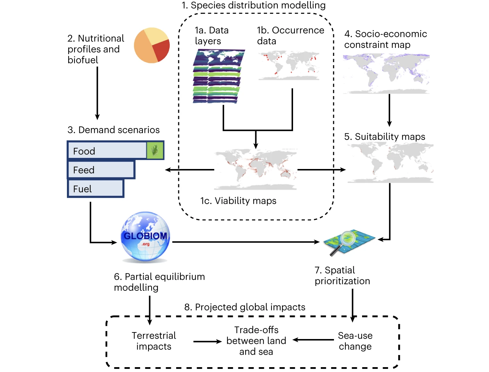
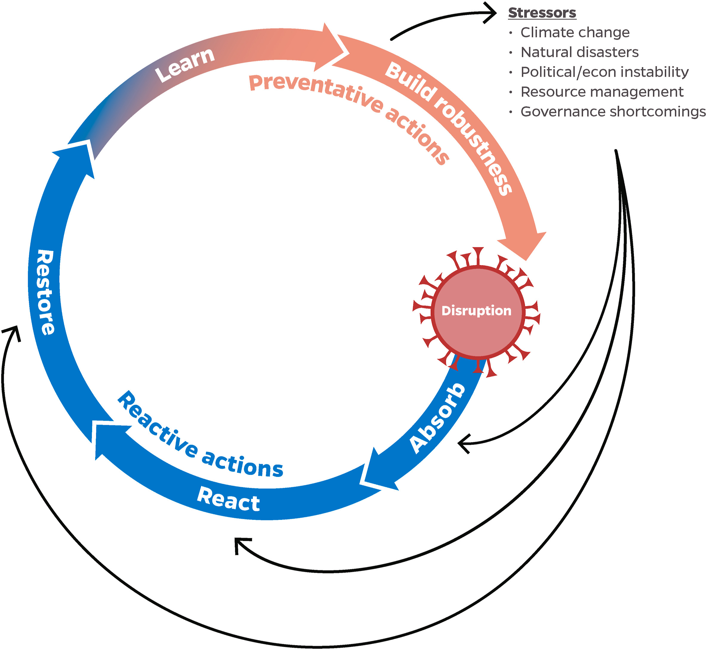
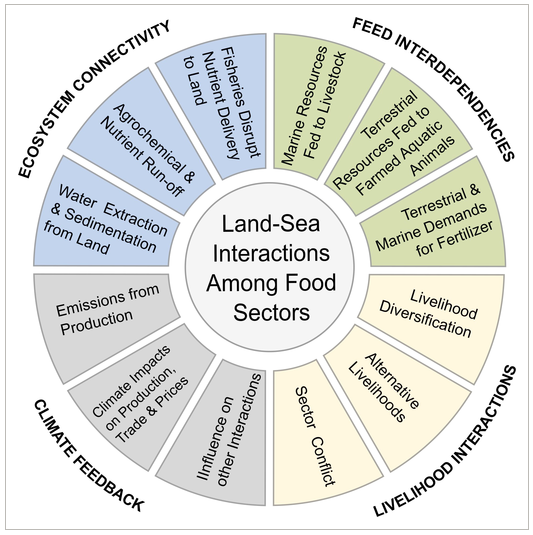

Home
Our approach
Our team
Our research
News
A collection of key publications by our team members, partners and collaborators
New tools to optimise feeds in support of ecosystem-based aquaculture
Our project is advancing three research areas to create a new sustainable aquaculture feed toolbox
Partner Investigators
A collection of key publications by our team members, partners and collaborators
news.html
Categories
All
(17)
Aquafeed development
(1)
Environmental impacts
(4)
Food systems
(5)
Global change
(11)
aquafeed development
(2)
environmental impacts
(1)
food systems
(6)
A collection of key publications by our team members, partners and collaborators
Vulnerability of blue foods to human-induced environmental change
Global change
Food systems
https://www.nature.com/articles/s41893-023-01156-y
Jun 26, 2023
Perspectives on aquaculture’s contribution to the Sustainable Development Goals for improved human and planetary health
Global change
food systems
https://onlinelibrary.wiley.com/doi/full/10.1111/jwas.12946#
May 10, 2023
Environmental footprints of farmed chicken and salmon bridge the land and sea
Environmental impacts
food systems
https://www.sciencedirect.com/science/article/pii/S0960982223000714
Mar 13, 2023

Reducing global land-use pressures with seaweed farming
Global change
environmental impacts
https://www.nature.com/articles/s41893-022-01043-y
Jan 26, 2023
The environmental footprint of global food production
Global change
food systems
https://www.nature.com/articles/s41893-022-00965-x#Sec1
Oct 24, 2022
Next-generation ensemble projections reveal higher climate risks for marine ecosystems
Global change
https://www.nature.com/articles/s41558-021-01173-9
Oct 21, 2022
Expert perceptions of seaweed farming for sustainable development
Food systems
https://doi.org/10.1016/j.jclepro.2022.133052
Sep 25, 2022
Mapping the spatial distribution of global mariculture production
Global change
Food systems
https://doi.org/10.1016/j.aquaculture.2022.738066
May 15, 2022
Feeding fish with fumes
aquafeed development
https://www.nature.com/articles/s41893-021-00798-0
Jan 1, 2022

Emerging COVID-19 impacts, responses, and lessons for building resilience in the seafood system
Global change
food systems
https://doi.org/10.1016/j.gfs.2021.100494
Mar 3, 2021
Time to rethink trophic levels in aquaculture policy
Aquafeed development
https://doi.org/10.1111/raq.12535
Feb 8, 2021
Integrating Life Cycle and Impact Assessments to Map Food’s Cumulative Environmental Footprint
Environmental impacts
food systems
https://doi.org/10.1016/j.oneear.2020.06.014
Jul 24, 2020
Global adoption of novel aquaculture feeds could substantially reduce forage fish demand by 2030
Global change
aquafeed development
https://www.nature.com/articles/s43016-020-0078-x
May 19, 2020
Putting all foods on the same table: Achieving sustainable food systems requires full accounting
Food systems
https://doi.org/10.1073/pnas.1913308116
Sep 10, 2019
Linked sustainability challenges and trade-offs among fisheries, aquaculture and agriculture
Global change
Food systems
Environmental impacts
https://www.nature.com/articles/s41559-017-0258-8
Aug 22, 2017

Considering land–sea interactions and trade-offs for food and biodiversity
Environmental impacts
Global change
https://doi.org/10.1111/gcb.13873
Aug 21, 2017
Can marine fisheries and aquaculture meet fish demand from a growing human population in a changing climate?
Global change
food systems
https://doi.org/10.1016/j.gloenvcha.2012.03.003
Oct 10, 2012
No matching items